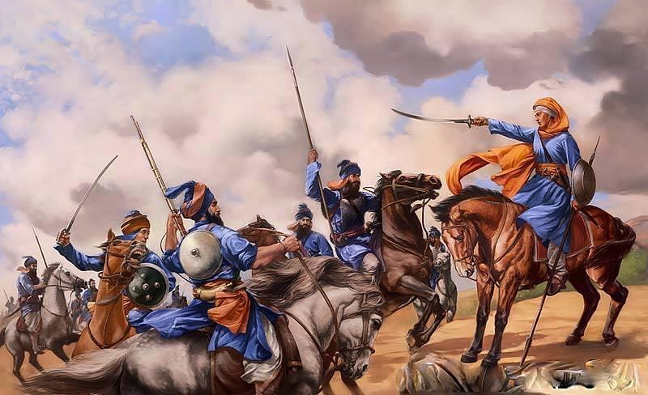

The Great Jorh Mela of Sri Muktsar Sahib, known as Maghi – the Sangrand of the month of Maagh. This occasion is traditionally one of the most significant events in the Sikh calendar. Hundreds of thousands of devotees (sangat) gather at Sri Muktsar Sahib to commemorate the historic victory of the Khalsa over the Mughal forces.
This battle resulted in heavy losses for the Mughal army, and the tyrannical General and Governor, Wazir Khan—who had retreated from Chamkaur Sahib and later ordered the execution of the younger Sahibzadas—lost both a nephew and a grandchild in the conflict.
According to history preserved through detailed research within the Sampardai, during the prolonged siege of Sri Anandpur Sahib—which lasted over eight months—approximately 200 Sikhs, including some Be-Amritdhari (non-initiated) individuals such as Duni Chand, a descendant of Bhai Shalo, displayed weakness and deserted the Guru’s presence, returning to their homes.
Upon their return, they were reproached and shamed by their devoted and courageous wives. Consequently, village councils from the regions of Majha and Lahore collectively decided to meet Guru Gobind Singh Ji at Ramayana, approximately 14 kilometres from Muktsar. Their intention was to offer mediation for a treaty with the Mughal rulers.
Guru Sahib questioned their sincerity, asking where they had been during the sacrifices of the Fifth Guru, the Ninth Guru, and the martyrdom of all four Sahibzadas. He asked whether they had come to learn from their Spiritual Master or to instruct Him. Guru Sahib then instructed them to write a resignation (Bedava), declaring that they were no longer His Sikhs, nor was He their Guru. This account differs from some contemporary historians, who claim the Bedava was written during the siege of Anandpur Sahib.
Ashamed and dismissed, they returned home. However, forty Sikhs—including Bhai Maha Singh and the valiant Mata Bhaag Kaur (Mai Bhago)—overcome with repentance and spiritual awakening, resolved to redeem their earlier failing. They chose to lay down their lives at Muktsar Sahib, attaining the supreme blessing of Guru Sahib.
Through their sacrifice, they erased the stain of desertion from the Majha region and achieved eternal honour. These warriors are remembered as the Chali Mukteh (the Forty Liberated Ones), whose names are invoked daily in the Sikh Ardaas.